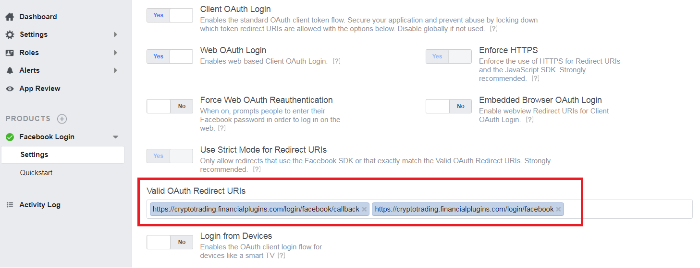
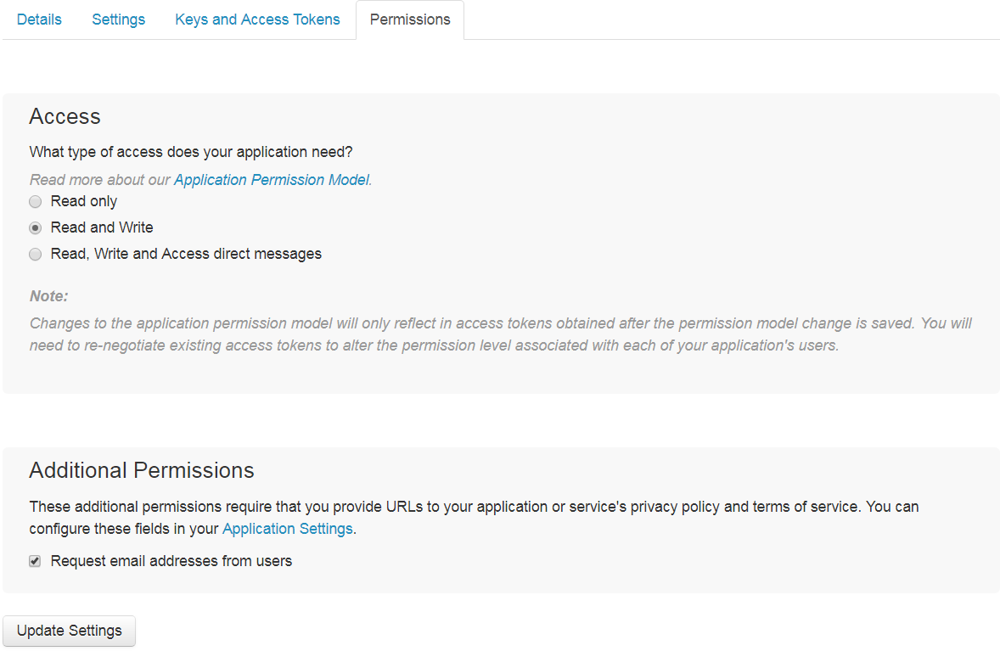

Download the application package from CodeCanyon, upload it to your server and unzip the contents of the archive to the web root folder of your domain (on shared hosting environments the web root is typically named public_html).
Create a MySQL (or MariaDB) database on your server, as well as a database user who has all privileges for accessing and modifying it.
Run the application installation script by accessing the following URL in a web browser: http://yourwebsite.com/install.php (substitute yourwebsite.com with your actual domain name). Follow the on-screen setup instructions to complete the installation.
Please make sure to add a system cron job in order to automatically execute scheduled tasks (such as market data update). The system cron job parameters are provided on the last step of installation and on the Maintenance page in the backend.
Once the app is up and running you have everything in place to run trading competitions. Log in to the website as admin, go to the admin panel and create a new competition. Customize competition parameters (such as starting balance, lot size, leverage etc) as needed. Users who sign up to the website will then be able to join this competition and make trades.
If you like to use a currency other than USD you can choose it in the app settings (navigate to Settings page in the backend). Please note that in this case you will also need to obtain a FREE openexchangerates.org API key by signing up at https://openexchangerates.org/signup/free. After you got the key save it in the settings ("Integration" tab).
It's updated every 10 minutes during stock exchange working hours.
The website Logo and other images are located in public/images folder. You can just overwrite the original files with your custom ones.
You can change translation strings for any language by editing translation files at resources/lang/LANGUAGE_CODE.
Yes, it can be done as a custom job. Please submit a feature request at support.financialplugins.com to discuss.
The application settings will be preserved, but please note that if you changed any of the application files you will have to apply these changes manually.
Bots are users that can trade on their own without user intervention. To create bots open the Users page in the backend, input number of bots and click "Create bots". After bots are created you can adjust their names and add avatar pictures, so they appear more like regular users. Then on the Competitions page you can add any number of bots to a particular competition (they will be randomly selected from the list of available bots).
If there are bots in a competition then every 5 minutes the app will wake them up. Every bot will open a random number of trades (min and max number of trades that can be open during each cycle can be specified in the app settings). The asset to trade will be randomly picked up from the list of top N assets (where N is a number, which can be specified in the settings). Trade direction and volume will also be randomly generated.
Every bot will also check if there are any previously open trades whose life time exceeds the min trade life time (specified in the settings). If so the bot will close a random number of such trades (min and max number of trades that can be closed during each cycle can be specified in the app settings).
Chat uses Pusher to function. In order to enable chat functionality you need to create a free account at pusher.com, create a new channels app and obtain its credentials (such as app ID, key, secret and cluster). After that input these credentials in the application settings in the backend (under "Integration" tab). The chat should then start working automatically.
Amongst other things please make sure to fill in App domains field under Settings Basic and Valid OAuth Redirect URIs field under Facebook login Settings. Example:
The paths should be the same except that you need to specify your own domain.
Please make sure to enable Request email addresses from users checkbox under Permissions.
Suppose you want to add a new page called "About us", which is accessible at http://yourwebsite/page/about-us (please note that all static pages URLs should include "page" slug). To do so create a new template file named about-us-udf.php (please note that "-udf" suffix should always be present in the template file name for every custom page you add) inside resources/views/pages/frontend/static folder and add necessary HTML markup / content.
Using the same technique you can override default Privacy Policy and Terms of Use pages templates by creating resources/views/pages/frontend/static/privacy-policy-udf.blade.php or resources/views/pages/frontend/static/terms-of-use-udf.blade.php template files respectively. Do not modify the original privacy-policy.blade.php or terms-of-use.blade.php files to be able to keep your custom changes after future application updates.
If you need any assistance please submit a support ticket at https://support.financialplugins.com.
© Built with by FinancialPlugins.com